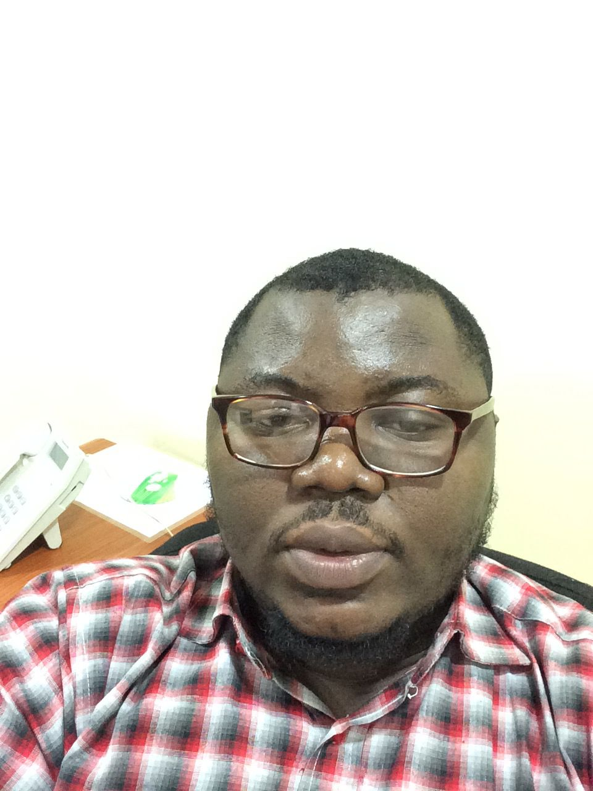

 I am a Nigerian full-stack software engineer with a passion for music. I discovered my love for music shortly before graduating high school and went on to become a professional drummer for six years before leaving the country to pursue further studies.
After over two years of college as a Communications major, I made a difficult decision to quit school and become a self-taught software developer. I spent two years learning and honing my skills before starting out as a freelancer building projects for small businesses.
Eventually, my dedication and hard work paid off when I landed my first full-time job as a programmer two years later. My love for software development and entrepreneurship led me to start me own company, See Sharp Developers. Today, I run my company on the side while working as a full-time Tech Lead at my current place of work.
My passion for music has not waned, and I still enjoy playing and listening to music in my free time. I am a testament to the fact that with dedication, perseverance and hard work, anyone CAN achieve success in any field.